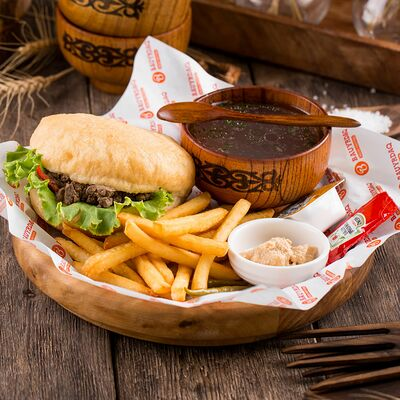
1. Bauyrdaq
Bauyrdaq - Almaty qalasy boiynsha tanymal tamak orny. Bul zherde ulttyq tagamdy zamanaui formatta koruge bolady.
Almaty qalasy boiynsha 6 mekenzhai
Almaty qalasy boiynsha qyzyqty mekenzhailar
Almaty - ortalyq Aziyadagy ekonomikasy en myqty ari korikti qala. Almaty qalasy ozinin taulary zhane asem tabigatymen tanymal. Bul qala studentter ushyn koldanylatyn qyzyqty mekenzhailar men oinau oryndar menen toly. Birneshe qyzyqty mekenzhailarmen bolisip oteik.
|
 1. BauyrdaqBauyrdaq - Almaty qalasy boiynsha tanymal tamak orny. Bul zherde ulttyq tagamdy zamanaui formatta koruge bolady. Almaty qalasy boiynsha 6 mekenzhai |
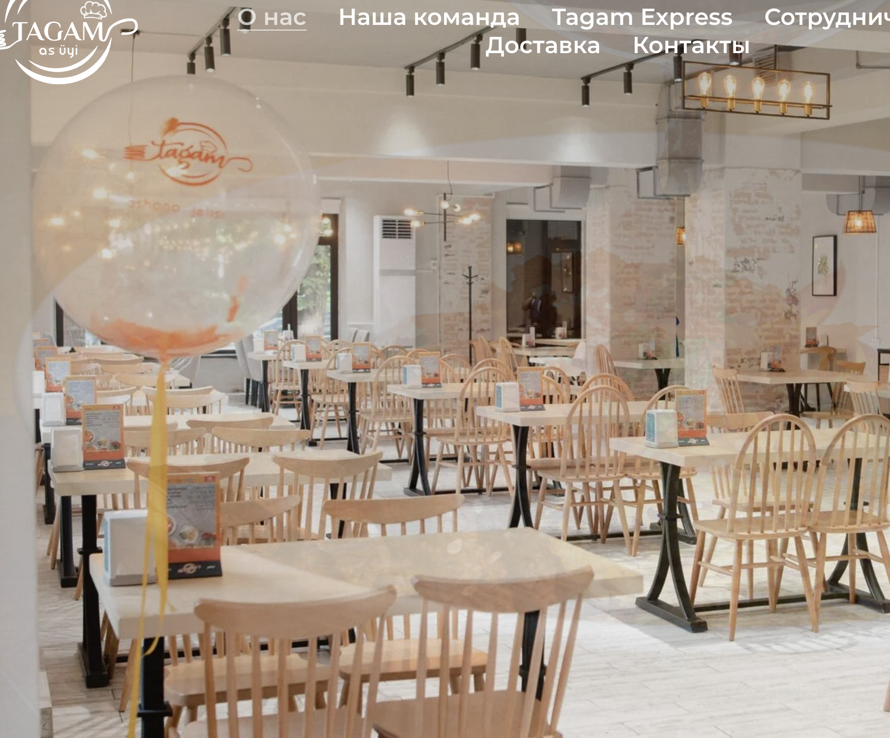 2. TagamTagam - Almaty qalasy boiynsha arzan ui tagamdary orny. Zhibek Zholy koshesi, Almaty |
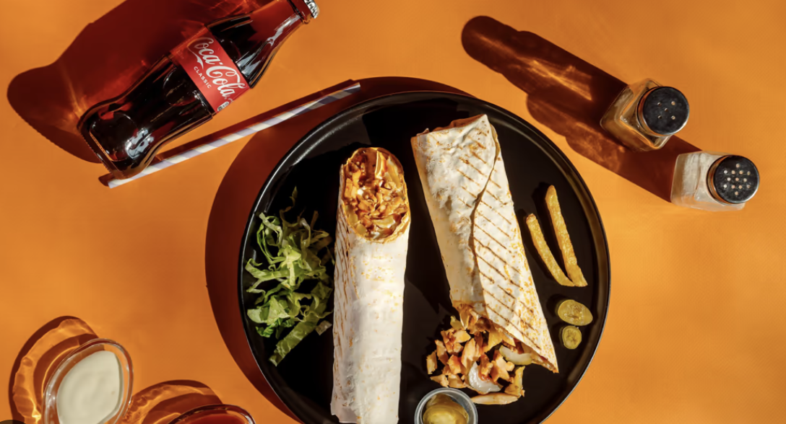 3. Doner-burger na SatpayevaDoner-burger na Satpayeva - arzan ui tagamdary bar zhaimshy restoran, dostарmen zhinalu ushin jaqsy. Satpayeva koshesi, Almaty |
|
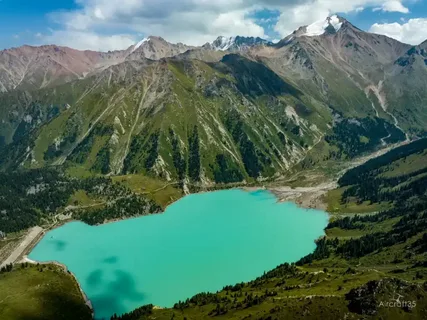 1. Ulken Almaty KoliQala syrtynda ornalasqan taza taулы kol, demalys kunderinde sayahatshylar men studentter usin tanymal oryn. Almaty qalasynan 28 km |
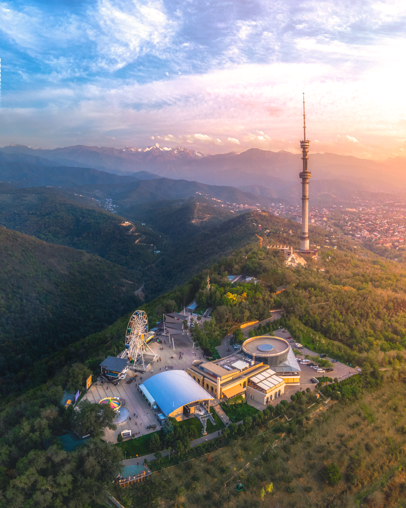 2. Kok-Tobe TauyKok-Tobe - Almatyga panoramaly korinis beretin tau, uste kabel jol men oiyn-sauyq ayangy bar. Kok-Tobe, Almaty |
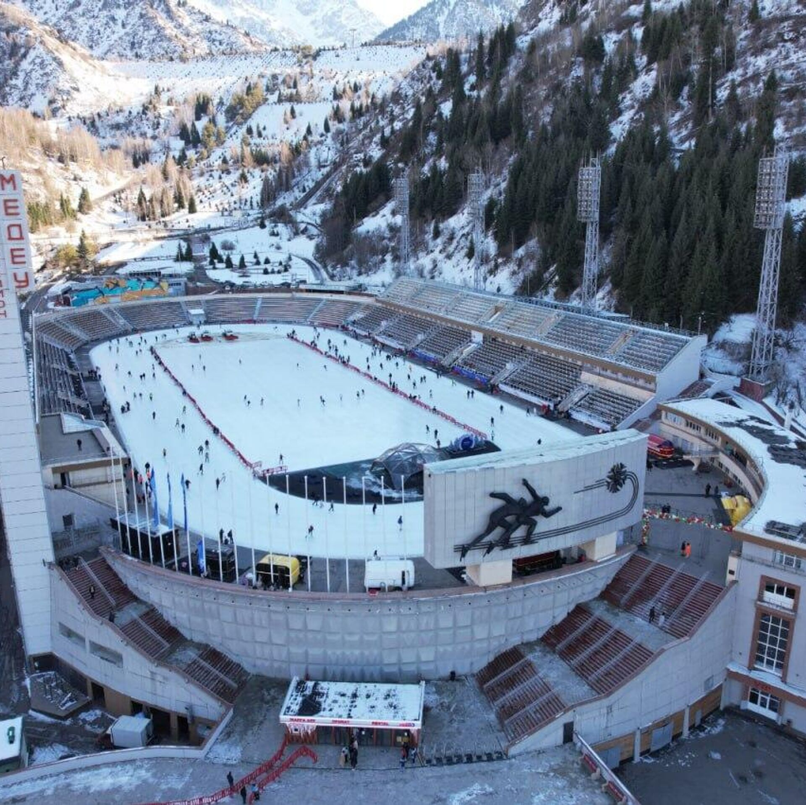 3. MedeuMedeu - qala syrtynda ornalasqan tanymal biikte muz aidyny zhane taулы alan, kunduzgi sayahat ushin tamasha. Medeu, Almaty |
|
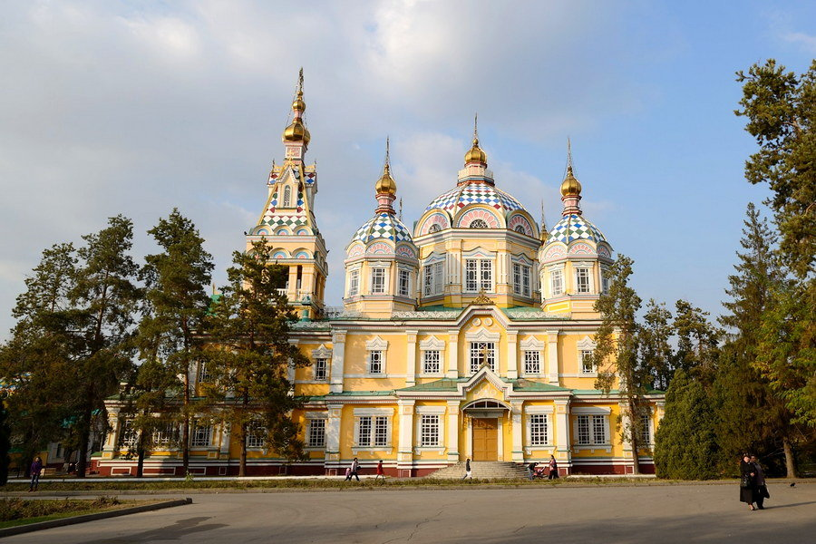 1. Zenkov SoboryZenkov sobory - Panfilov bagynda ornalasqan agash sonyshy shirkeu, Almatynyn en tanymal tarihi ymarаttaryn birі. Panfilov bagy, Almaty |
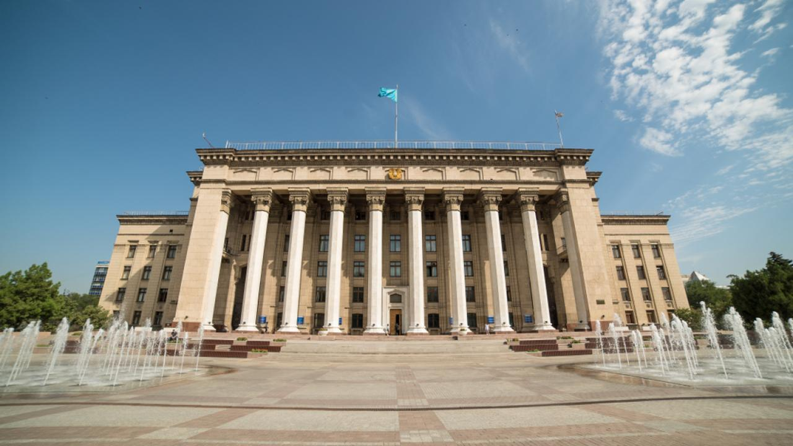 2. KBTUKBTU - Almaty qalasy boiynsha tanymal universitet ymaraty, qalanyn zamanaui tarihynda manyzdy oryn аlady. Tole bi koshesi 59, Almaty |
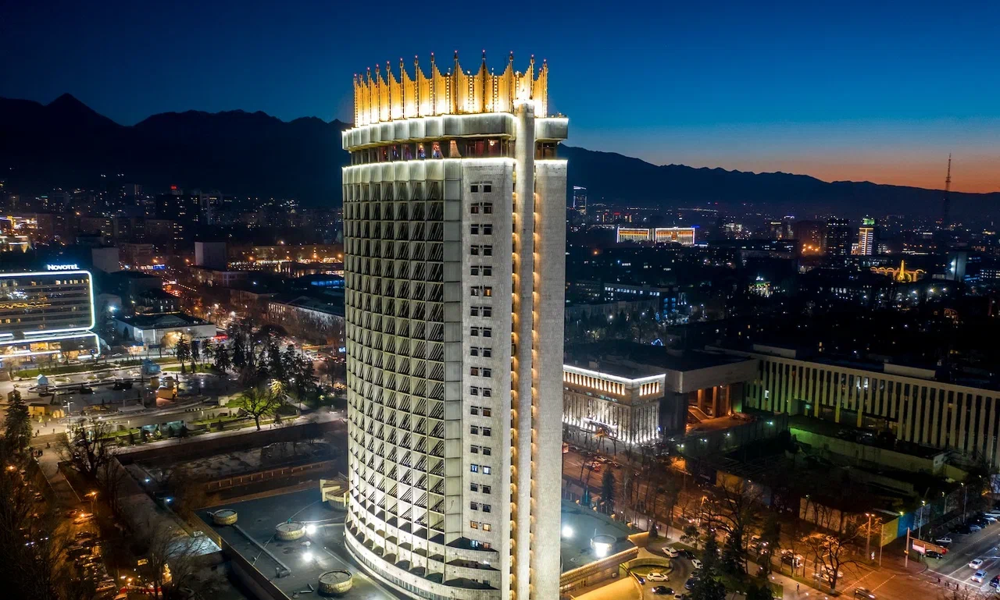 3. Qazaqstan Qonaq UyiQazaqstan Qonaq Uyi - Almatynyn ozindik belgisi, tarihi ari fotogendik oryn. Respublika alany, Almaty |
|
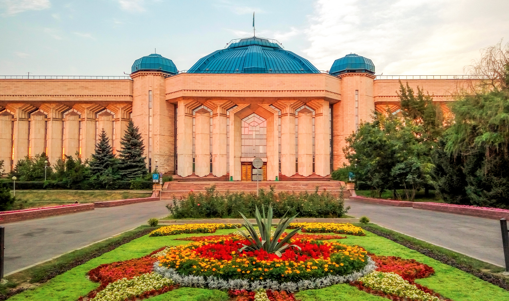 1. Ortalyq Memlekettik MuzeyQazaqstannyn tarihy men madenietine arnalgan zattar koп saqталган iri muzey. Samal ayangy, Almaty |
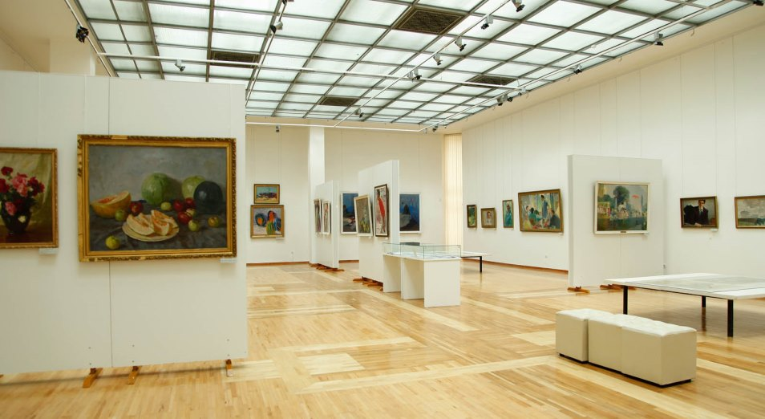 2. A. Kasteev Atyndagy Onerler MuzeyiQazaqstandyq zhane orys suretshilerinin shygarmalary korсetiletin onerler muzeyi. Mukanov koshesi, Almaty |
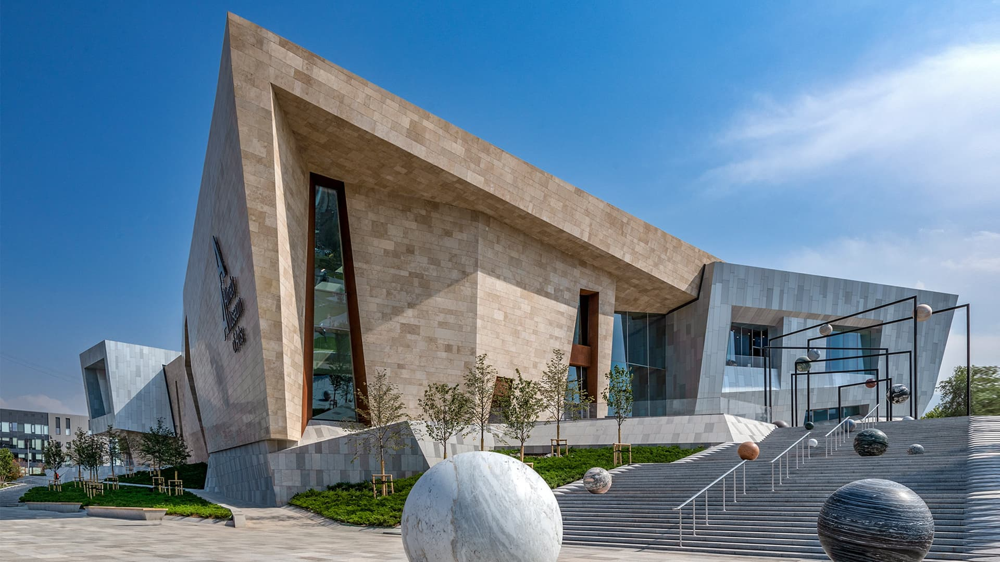 3. Almaty Museum of ArtsAlmaty Museum of Arts - zamanaui zhane klassikalyk onerge arnalgan shagyn galereya, jastar arasynda tanymal. Al-Farabi koshesi, Almaty |
|
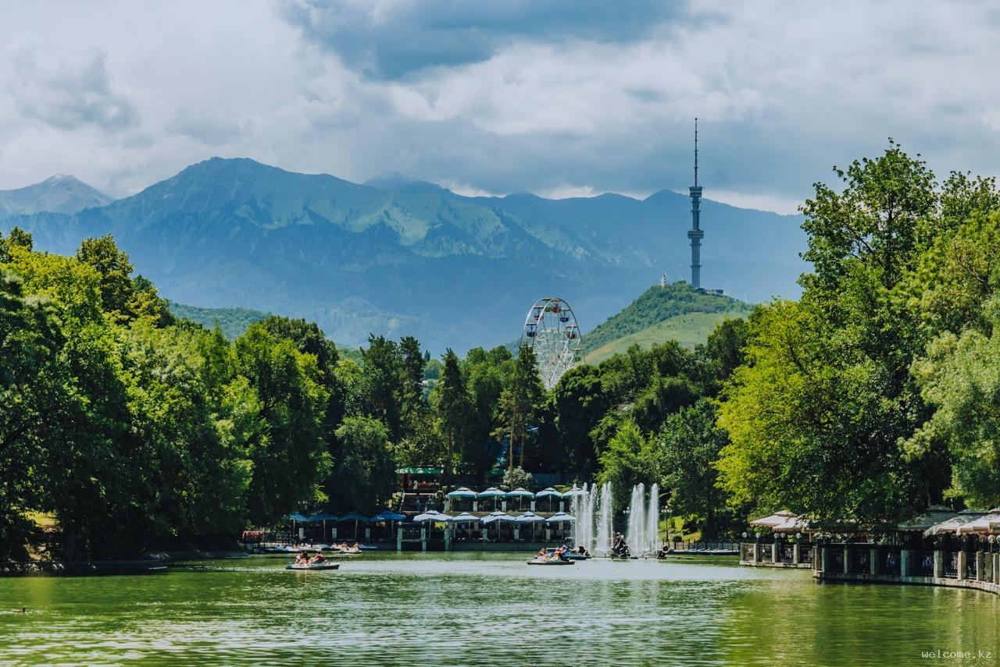 1. Gorky ParkiAttraktsionderi, kolenkeli joldary zhane sygtan kafeleri bar klassikalyk qalalyk baq. Gogol koshesi 39, Almaty |
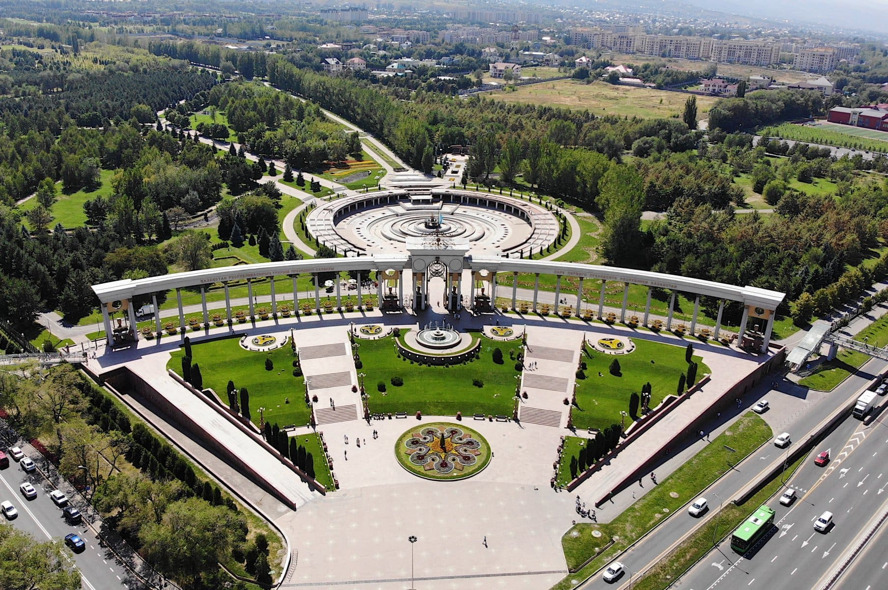 2. Birinshi Prezident BagyFontandары men serueнleu joldary bar iri baq, saback aralygynda demalu ushin tamasha. Al-Farabi dangyly, Almaty |
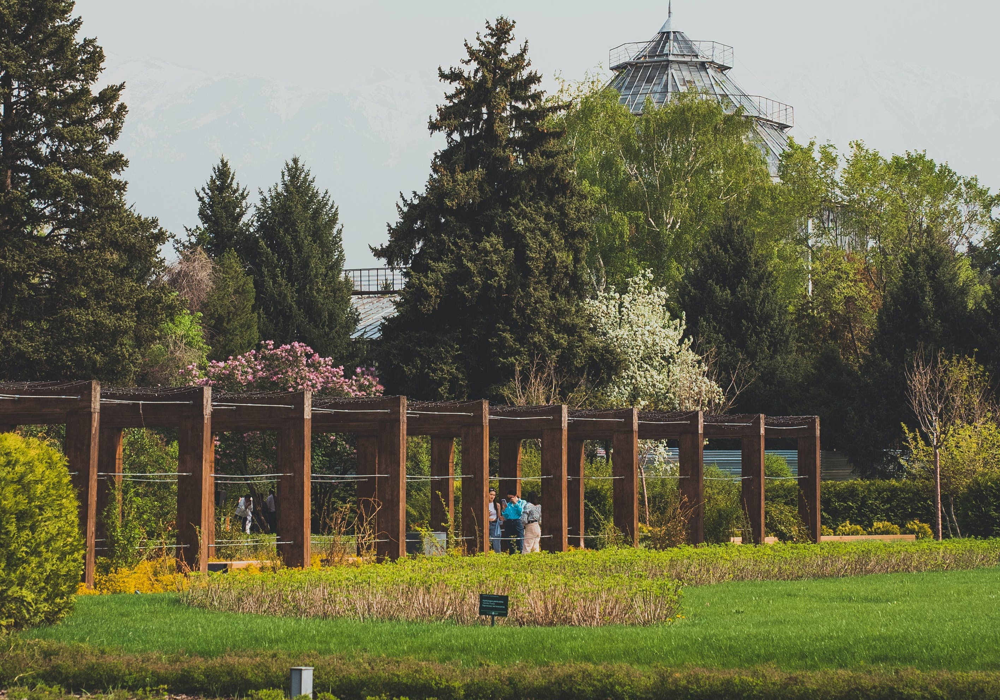 3. Botanikalyk BakKoli men kop osimdik turleri bar tynysh jasyl aimak, qala shuinen demalu ushin qolaily. Timiryazev koshesi 36, Almaty |
| Oryn | Sanat | Bagasy | Ornalasuy |
|---|---|---|---|
| Bauyrdaq | Tamaq | 2 000–4 000 tenge | Almaty (6 filial) |
| Doner-burger na Satpayeva | Tamaq | 1 000–2 000 tenge | Satpayeva |
| Kok-Tobe Tauy | Tabigat | 2 000 tenge (kabel jol) | Kok-Tobe |
| Qazaqstan Qonaq Uyi | Tarihi meken | Ashyq aiмaq, tegin koruge bolady | Respublika alany |
| Ortalyq Memlekettik Muzey | Murazhay | 500–1 000 tenge | Samal |
Almatyda studenttik kunindi otkizu:
| Uaqyt | Is-areket |
|---|---|
| 08:30 | Bauyrdaq-ta tanertenlik as |
| 10:00 | Universitet |
| 13:00 | Doner-burger na Satpayeva-da tuskilik as |
| 15:00 | Ortalyq Memlekettik Muzeyge bary |
| 18:00 | Kok-Tobe-de seruendeu |
| 20:00 | Qazaqstan Qonaq Uyi maidanynda demalys, qonaq uide qalu |